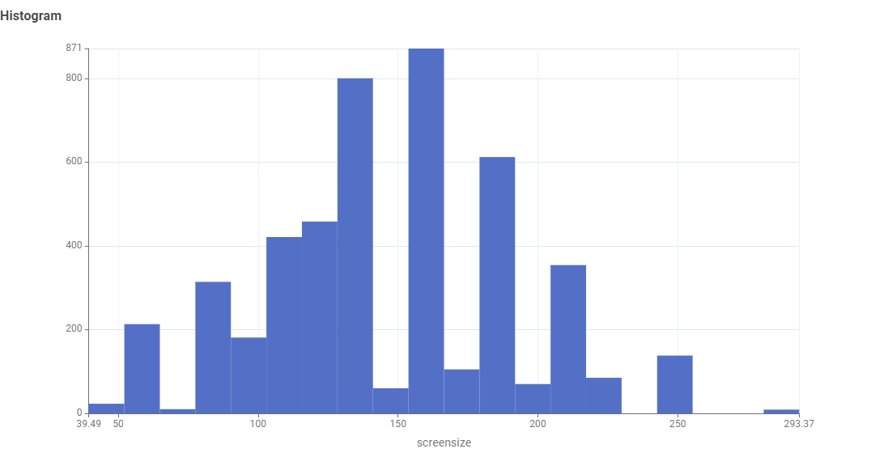
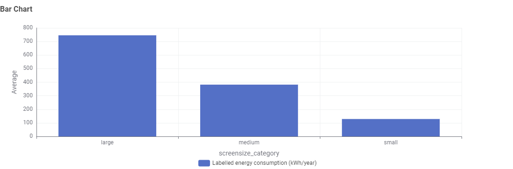
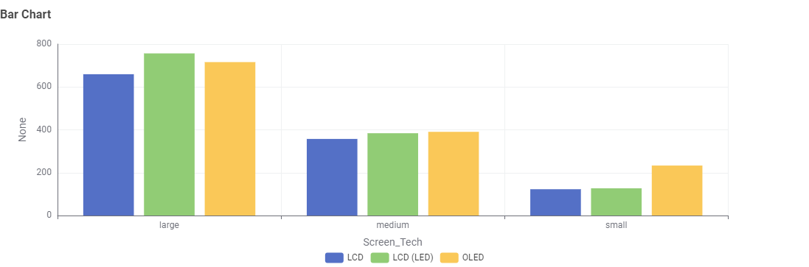
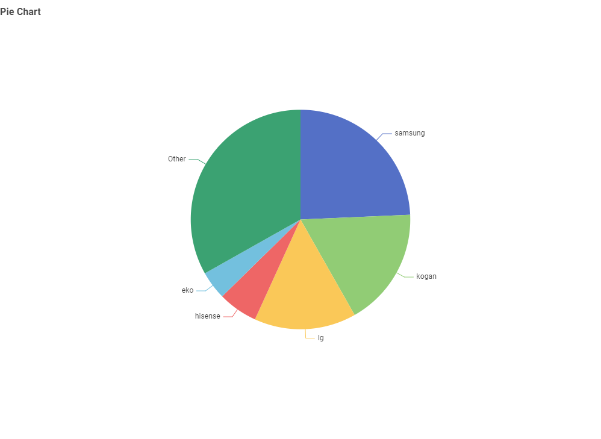

Business Screen Buying: Save Money & Cut Energy Use
Buying screens for offices, hotels, or schools? Learn how screen size, technology, and brand choices affect your organization's energy bills and carbon footprint before placing bulk orders.
Business Planning Storyboard
A simple step-by-step guide for office managers and buyers purchasing screens in bulk.
Issue:
Buying too many large screens for offices slowly drives up company power bills and harms green goals.
Demonstrate Issue:
New standard: 55"–65" screens are becoming the default for meeting rooms, raising everyday energy use.
Demonstrate Impact:
Bulk cost: Buying dozens of 75"+ screens multiplies power consumption by thousands of extra kWh each year.
Explore Tech:
Screen types: Fancy OLED displays often use more power than standard LED screens when left on all day.
Market Context:
Top brands: Samsung & LG supply most business screens, so companies must request efficient models directly.
RECOMMENDATION:
Set strict energy rules for supplier contracts and match screen sizes to the actual room size.

1. Office Standards: Screens Are Getting Bigger
The display market is heavily skewed toward larger screen sizes. Dataset trends show 55-inch to 65-inch models (140cm–165cm) dominate overall sales and availability, making larger screens the standard choice for both home and workplace setups.
-
aspect_ratio
Smaller Options Are Harder to Find
Smaller, lower-power screens represent a shrinking portion of market sales, requiring commercial buyers to plan energy budgets around today’s larger default display sizes.

2. Higher Costs: Bulk Orders Multiply Energy Bills
Larger screens require much more power to run. Installing dozens of extra-large 75"+ screens across a building increases company energy use by tens of thousands of kilowatt-hours every year.
-
bolt
Set Size Rules for Rooms
Choosing screen sizes based on actual room dimensions prevents buying unnecessarily large models and keeps ongoing power costs low.

3. Screen Types: Image Quality vs. Daily Power Use
Choosing the right screen technology for displays that stay on all day requires balancing picture quality with electricity costs.
-
monitor
LED vs. OLED Power Use
While OLED screens offer brilliant picture contrast in boardrooms, standard LED panels usually draw less power over long daily work hours.

4. Major Brands: Asking Suppliers for Efficient Options
A few major brands control most of the business screen market. Business buyers have enough purchasing power to demand eco-friendly models when ordering in bulk.
-
pie_chart
Hold Suppliers Accountable
Because brands like Samsung and LG make up the majority of options, companies should require low standby power and eco-friendly ratings in supplier contracts.
Business Action Plan
Match Screen Size to Room Size
Create clear sizing guidelines for small meeting rooms vs. large halls to avoid buying oversized screens that waste energy.
Set Energy Limits in Supplier Contracts
Require max power usage limits when asking suppliers for quotes to ensure you only purchase energy-efficient models.